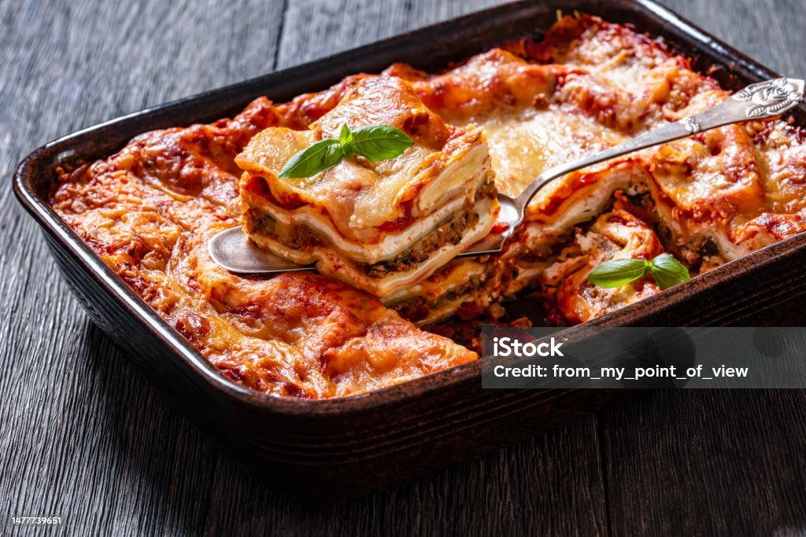

Lasanha à Bolonhesa
A lasanha à bolonhesa é um clássico da culinária italiana, perfeito para reunir a família em volta da mesa. Quer saber como preparar esta deliciosa receita em sua própria casa? Siga os passos abaixo!
Ingredientes:
- 500g de massa para lasanha
- 500g de carne moída
- 1 cebola média picada
- 2 dentes de alho picados
- 2 colheres de sopa de azeite de oliva
- 1 lata de tomate pelado
- 1 xícara de molho de tomate
- 1 xícara de queijo parmesão ralado
- 300g de queijo mussarela fatiado
- Sal e pimenta a gosto
- Folhas de manjericão fresco (opcional)
Modo de preparo:
- Aqueça o azeite em uma panela e refogue a cebola e o alho até dourarem;
- Adicione a carne moída e refogue até que esteja bem cozida;
- Acrescente o tomate pelado e o molho de tomate, deixando cozinhar por alguns minutos;
- Tempere com sal, pimenta e folhas de manjericão a gosto;
- Em uma forma refratária, monte camadas alternadas de molho bolonhesa, massa para lasanha e queijo mussarela, finalizando com queijo parmesão por cima;
- Repita o processo até que todos os ingredientes sejam utilizados, terminando com uma camada de queijo parmesão;
- Leve ao forno preaquecido a 180°C por aproximadamente 30-40 minutos, ou até que a lasanha esteja dourada e borbulhante;
- Retire do forno, deixe repousar por alguns minutos e sirva em seguida. Bom apetite!

Serve até 6 pessoas